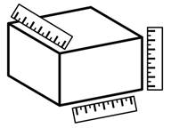
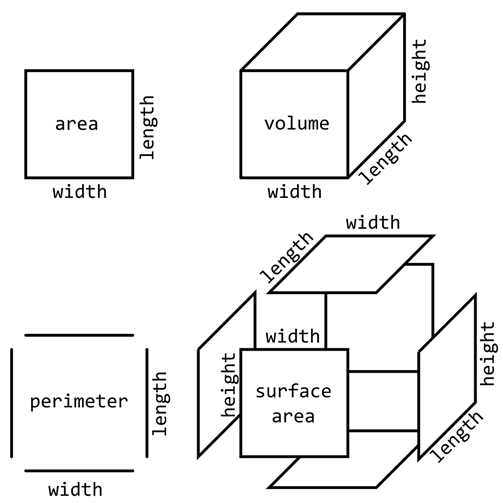

Prev - #3 Odd & Even | Table of Contents | Next - #5 Fizz Buzz
area(10, 4) → 40
perimeter(10, 4) → 28
volume(10, 4, 5) → 200
surfaceArea(10, 4, 5) → 220

Area, perimeter, volume, and surface area are straightforward
calculations. This exercise is similar to Exercise #2, “Temperature Conversion”
and Exercise #3, “Odd & Even.” Each function in this exercise is a simple
calculation and return statement. However, area and
volume are slightly more complicated because they involve multiple parameters.
This exercise continues to challenge you to translate mathematical formulas
into Python code.
Exercise Description
You will write four functions for this exercise. The functions area() and perimeter() have length and width parameters and
the functions volume() and surfaceArea()
have length, width, and height parameters. These functions return the area,
perimeter, volume, and surface area, respectively.
The formulas for calculating area, perimeter, volume, and surface area are based on the length (L), width (W), and height (H) of the shape:
· area = L × W
· perimeter = L + W + L + W
· volume = L × W × H
· surface area = (L × W × 2) + (L × H × 2) + (W × H × 2)
Area is a two-dimensional measurement from multiplying length and width. Perimeter is the sum of all of the four one-dimensional lines around the rectangle. Volume is a three-dimensional measurement from multiplying length, width, and height. Surface area is the sum of all six of the two-dimensional areas around the cube. Each of these areas comes from multiplying two of the three length, width, or height dimensions.
You can see what these formulas measure in Figure 4-1.

Figure 4-1: The components of area, volume, perimeter, and surface area.
These Python assert statements stop
the program if their condition is False. Copy them
to the bottom of your solution program. Your solution is correct if the following
assert statements’ conditions are all True:
assert area(10, 10) == 100
assert area(0, 9999) == 0
assert area(5, 8) == 40
assert perimeter(10, 10) == 40
assert perimeter(0, 9999) == 19998
assert perimeter(5, 8) == 26
assert volume(10, 10, 10) == 1000
assert volume(9999, 0, 9999) == 0
assert volume(5, 8, 10) == 400
assert surfaceArea(10, 10, 10) == 600
assert surfaceArea(9999, 0, 9999) == 199960002
assert surfaceArea(5, 8, 10) == 340
Try to write a solution based on the information in this description. If you still have trouble solving this exercise, read the Solution Design and Special Cases and Gotchas sections for additional hints.
Prerequisite concepts: math operators, operator precedence
Solution Design
Use the same strategy you used in Exercise #2, “Temperature
Conversion” and translate the math formulas into Python code. Replace the L, W,
and H with the length, width,
and height parameters. Replace the + addition and ×
multiplication signs with the + and * Python operators. These functions can be one line long:
a return statement that calculates the result and
returns it.
Special Cases and Gotchas
Length, width, and height can only be positive numbers. You could write additional code that checks if any of these are negative numbers, and raise an exception in that case. However, this isn’t a requirement for this exercise.
Now try to write a solution based on the information in the previous sections. If you still have trouble solving this exercise, read the Solution Template section for additional hints.
Solution Template
Try to first write a solution from scratch. But if you have difficulty, you can use the following partial program as a starting place. Copy the following code from https://invpy.com/areavolume-template.py and paste it into your code editor. Replace the underscores with code to make a working program:
def area(length, width):
# Return the product of the length and width:
return ____ * ____
def perimeter(length, width):
# Return the sum of the length twice and the width twice:
return ____ * 2 + width * ____
def volume(length, width, height):
# Return the product of the length, width, and height:
return ____ * ____ * ____
def surfaceArea(length, width, height):
# Return the sum of the area of each of the six sides:
return ((length * ____) + (length * ____) + (width * ____)) * 2
The complete solution for this exercise is given in Appendix A and https://invpy.com/areavolume.py. You can view each step of this program as it runs under a debugger at https://invpy.com/areavolume-debug/.
Prev - #3 Odd & Even | Table of Contents | Next - #5 Fizz Buzz